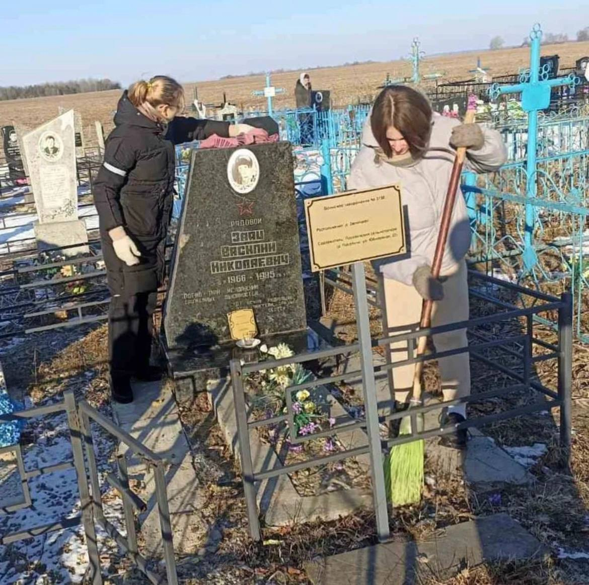

Земляки, павшие в Афганской войне

Пожалуй, на земле никогда не наступит такое время, когда слово «солдат» станет ненужным и незнакомым. Войны на нашей планете не прекращаются с древних времен. А путь войны всегда страшен. Ушла в историю Афганская война. Она продолжалась с 25 декабря 1979 до 15 февраля 1989 года, то есть 2 238 дней. Свой след эта война оставила и в памяти белорусского народа.
Согласно Указу Президента Республики Беларусь от 26 марта 1998 г. №157 «О государственных праздниках, праздничных днях и памятных датах в Республике Беларусь», 15 февраля установлен Днём памяти воинов-интернационалистов, исполнявших служебный долг за пределами Отечества.
С 1979 по 1989 годы в Афганистане проходили службу более 30 тысяч уроженцев Беларуси. Из них 771 человек погиб, 12 числятся без вести пропавшими, более полутора тысяч получили ранения и увечья, 718 стали инвалидами. Война коснулась своим крылом и Хойникский район. Сто двадцать шесть молодых ребят из района служили в Афганистане. В том числе и наши земляки, жители Поселичского сельского совета, призванные служить в Советской Армии в 1980-х годах. Семеро молодых парней, уроженцев Хойникщины, погибли на земле Афганистана, выполняя интернациональный долг. Это огромная боль для родных. Это невосполнимые потери…
Из истории Афганской войны
Афганская война (1979–1989) – один из этапов гражданской войны в Афганистане, ознаменованного присутствием на территории этой страны военного контингента советских войск. В данном конфликте принимали участие вооруженные силы правительства Демократической Республики Афганистан (ДРА) с одной стороны и вооруженная оппозиция (моджахеды, или душманы) – с другой. Борьба велась за полный политический контроль над территорией Афганистана. В военный конфликт оказалась непосредственно втянута и Советская Армия, введенная в страну по решению Политбюро ЦК КПСС для поддержки кабульского правительства. Моджахедам в ходе конфликта поддержку оказывали военные специалисты США, ряда европейских стран – членов НАТО, Китая, а также пакистанские спецслужбы.
Одной из причин войны стало стремление поддержать сторонников концепции социализма в Афганистане, пришедших к власти в результате Апрельской революции, столкнувшихся с мощной оппозицией своей социальной, экономической и политической стратегии. Американская военно-экономическая деятельность в регионе создавала угрозу выхода Афганистана из советской сферы влияния. Также ввод советских войск преследовал цель предотвратить возможное укрепление в регионе исламского фундаментализма, вызванное исламской революцией в Иране 1979. Само по себе падение просоветского правительства означало бы сильный удар по внешнеполитическим позициям СССР, поскольку, случись такое, это был бы первый в послевоенной истории случай низложения просоветского правительства.
Теоретически, помимо прямых последствий, распространение фундаментализма могло через афганских таджиков существенно дестабилизировать советскую Среднюю Азию. На международном уровне было заявлено о том, что СССР руководствуется принципами «пролетарского интернационализма». В качестве формального основания Политбюро ЦК КПСС использовало неоднократные просьбы руководства Афганистана и лично Хафизуллы Амина об оказании стране военной помощи для борьбы с антиправительственными силами.
Введенные в Афганистан советские войска оказались вовлеченными во внутренний военный конфликт на стороне правительства. Они охраняли автомобильные дороги, многие объекты советско-афганского экономического сотрудничества. Охраняли и обеспечивали функционирование аэродромов в крупных городах. Содействовали укреплению органов власти в 21 провинциальном центре. Проводили колонны с военными и народнохозяйственными грузами для своих нужд и в интересах ДРА. Совместно с афганскими частями и подразделениями вели боевые действия различного масштаба по разгрому вооруженных отрядов и групп оппозиции, а также борьбу с караванами, доставлявшими оружие и боеприпасы в ДРА из Пакистана и Ирана.
Вывод советских войск из Афганистана, за которым осуществлялся контроль наблюдателями ООН, был завершен к 15 февраля 1989 года.
Время отдаляет нас от тех событий. Однако, память о войне по-прежнему болью отзывается в сердцах матерей, отцов, вдов, детей тех парней, которые возвращались домой «грузом-200».
Участников Афганской войны в Беларуси объединяет общественное объединение «Белорусский Союз ветеранов войны в Афганистане», созданный 12 марта 1993 года (входит около 13,5 тыс. человек).

Память об Афганской войне хранят мемориальные комплексы и памятники разных регионов страны. Символом памяти о трагической странице истории является мемориальный комплекс «Остров мужества и скорби», открытый в г. Минске в августе 1996 года.


Центром мемориального комплекса стал памятник «Сынам Отечества, которые погибли за его пределами».

Внутри памятника – четыре алтаря с нанесенными именами погибших белорусов. Среди них две фамилии Героев Советского Союза – рядового пулеметчика Андрея Мельникова из Могилева, героически погибшего при обороне высоты, и командира саперного подразделения старшего сержанта Николая Чепика из Пуховичского района.
В 2015 году в крипту Храма-памятника в честь Всех святых и в память о жертвах спасению Отечества нашего послуживших заложены капсулы с землей, привезенной из пяти провинций Афганистана, в которых воевали воины-интернационалисты из Беларуси.
Афганская война завершилась 15 февраля 1989 года. Но она никогда не окончится в семьях, потерявших на той войне близких людей, как не окончится она в сердцах тех, кто был на той войне. 15 февраля – это особый повод высказать уважение ветеранам Афганской войны, почтить память тех, кто с нее не вернулся.
Поисково-исследовательская деятельность
В 1989 г. закончилась Афганская война, которая вошла во многие семьи горем, тревогой и переживаниями. Афганская война стала уже историей. Об этой войне известно многое. Подсчитаны безвозвратные потери в живой силе и технике. Невозможно лишь подсчитать сколько пролито материнских, вдовьих и детских слёз, сколько не зарубцевавшихся ран осталось в сердцах людей.
Память – это, наверное, единственное, что помогает человеку думать, сопереживать, не забывать о тех, кто честно служил и был верен присяге, о тех, кто в своем последнем бою не струсил и не смалодушничал, а погиб солдатом, верным своему долгу перед Родиной. Ради сохранения памяти о воинах-интернационалистах учащимися и педагогами Поселичской средней школы проводится поисково- исследовательская и волонтерская работа.
Цель поисково-исследовательской работы в Поселичской средней школе по изучению истории Афганской войны – сбор и систематизация материалов о событиях Афганской войны, о наших земляках, которые выполняли интернациональный долг.
Для достижения поставленной цели решаются следующие задачи:
- Изучаются и анализируются различные источники информации о советско – афганской войне; наших земляках, принимавших в ней участие.
- Собираются материалы о судьбе воинов-интернационалистов.
- На основании собранных материалов оформляется школьная выставочная экспозиция.
- Проводятся тематические мероприятия, патриотические акции.
Одной из форм поисково-исследовательской работы является интервью с людьми, которые сопричастны к теме Афганской войны. Так, в рамках поисковой работы выпускник Поселичской средней школы Амельченко Владислав взял интервью у ветерана боевых действий Александра Людвиговича Гордейчика. Вот что рассказывает Александр Людвигович:
смотреть в отдельном окне
Работа по систематизации и сохранению информации по войне в Афганистане происходит путем создания лепбуков и небольших буклетов по теме.

В предверии Дня памяти воинов-интернационалистов, исполнявших служебный долг за пределами Отечества, учащиеся и педагоги школы организовывают тематическую экспозицию.

Мы помним, мы гордимся!
Земляки, павшие в Афганской войне
Найденко Ф. А.
Найденко Федор Александрович, рядовой, ст. механик-водитель тягача, род.17.11.1965 в дер. Велетин Хойникского р-на Гомельской обл. БССР. Белорус. В Вооруж. Силы СССР призван 11.4.85 Хойникским РВК. В Респ. Афганистан с июля 1985. Проявил себя решительным, бесстрашным, отлично подготовленным воином. 12.7.1987 выполнял боевую задачу в составе дежурного подразделения на аэродроме г. Кандагар. Погиб при тушении пожара на самолете, груженном боеприпасами. За мужество и отвагу нагр. орд. Красной Звезды (посмертно). Похоронен в дер. Велетин. Вот эти данные были взяты из белорусской книги памяти: Найдзенка Фёдар Аляксамдравіч Нардзіўся 17. 11. 1965 г. ў в. Веляцін Хойніцкага раёна Гомельскай вобласці. Беларус. Член ВЛКСМ, Бацькі працуюць у калгасе «Бальшавік»: маці, Галіна Аляксандраўна, паляводам, бацька, Аляксандр Ва-сілевіч, кладаўшчыком. У 1980 г. Фёдар на выдатна скончыў Веляцінскую васьмігадовую школу, у 1985 г. — Гомельскі тэхнікум чыгуначнага транспарту. Па накі-раванні Хойніцкага РВК скончыў курсы шафёраў. У красавіку 1985 г. прызваны ў Савецкую Армію Хойніцкім РВК, накіраваны ў Афганістан. Радавы Ф. А. Найдзенка загінуў 12. 7. 1987 г. пры тушэнні самалёта з бомбамі на борце, які загарэўся. Пахаваны ў в. Ве-ляцін. Пасмяротна ўзнагароджаны ордэнам Чырвонай Зоркі. З пісьма Ф. А. Найдзенкі родным 5 жніўня 1985 г. Привет из Кандагара! Здравствуйте, дорогие родные папа, мама и сестрёнка Галинка! С огромным солдатским приветом и массой самых наилучших пожеланий к Вам воин-интернационалист Фёдор. Вот, наконец, у меня подобралась подходящая минута времени, и я решил написать Вам письмо. Служу я, как Вы уже, наверно, догадались, в ДРА, т. е. в Афганистане. Сразу хочу сообщить, что не надо беспокоиться, служба здесь тихая, есть, правда, некоторые трудности, но это связано с климатом... Сейчас живём в палатках, скоро должны переселиться в более благоустроенное жильё. Кормят здесь хорошо, даже вкуснее, чем в карантине. Где-то на этой неделе за нами должны закрепить машины, а пока я нахожусь в канцелярии, т. с., так сказать, на общественной работе, оформляю настенгазеты и прочее, короче — занимаюсь писаниной. У нас каждый день в клубе вечером показывают кинофильмы. Говорят, что здесь так круглый год. Нас сюда много приехало из карантина, все свои ребята и служим в одной роте — в автотехнической. Здесь даже есть бассейн, так что иногда ходим купаться.
Заяц В. С.
Заяц Василий Николаевич, рядовой, ст. разведчик, род. 5.6.1966 в дер. Звеняцкое Хойникского р-на Гомельской обл. БССР. Белорус. Работал в колхозе "Большевик" Хойникского р-на. В Вооруж. Силы СССР призван 15.10.84 Хойникским РВК. В Респ. Афганистан с марта 1985. Проявил себя храбрым, самоотверженным, хорошо подготовленным воином. 26.7.1985, действуя в составе развед, дозора, погиб при отражении нападения пр-ка. За мужество и отвагу нагр. орд. Красной Звезды (посмертно). Похоронен в дер. Звеняцкое. Вот эти данные были взяты из белорусской книги памяти: Заяц Васіль Мікалаевіч Нарадзіўся 5.6.1966 г. ў в. Звяняцкае Хойніцкага раёна Гомельскай вобласці. Беларус. Член ВЛКСМ. Маці, Кацярына Усцінаўна, пенсіянерка, бацька, Міка-лай Платонавіч, працуе трактарыстам. У 1981 г. Васiль скончыў Звяняцкую сярэднюю школу, у 1984 г.-Рудакоўскае ПТВ № 183, пасля чаго працаваў трактарыстам у калгасе «Бальшавік». У кастрычніку 1984 г. прызваны ў Савецкую Армію Хойніцкім РВК. Накіраваны ў Афганістан. Радавы В. М. Заяц загінуў 26.7.1985 г. Пахаваны ў в. Звяняцкае. Пасмяротна ўзнагароджаны ордэнам Чырвонай Зоркі.
Анисенко И. С.
\Анисенко Игорь Савельевич, мл. сержант, сан. инструктор, род. 14. 5. 1962 в г. Хойники Гомельской обл. БССР. Белорус. Работал на шахте. В Вооружённые Силы СССР призван 11. 11. 80 Дзержинским РВК Донецкой обл. В Республике Афганистан с мая 1981. Принимал участие в боевых опер-ях. Неоднократно, рискуя жизнью, прикрывал раненых товарищей огнем из лич. оружия-и выносил из боя. 19. 6. 1982 в р-не нас. пункта Малик-Шерджан действовал во взводе, атакующем позиции пр-ка. Личным примером воодушевлял солдат. В тот день они должны были прочесать один из аулов. На роту напали душманы,завязался бой. Многие были ранены. Игорь Анисенко смог перенести 13 раненых солдат в укрытие,чем спас им жизнь. Когда Игорь увидел,что роте не справиться с врагом,он стал вызывать помощь по рации,но антенна рации оказалась поврежденной. Игорь поднялся,чтобы отремонтировать антенну,но был тяжело ранен в голову,позже скончавшись по дороге в госпиталь. За мужество и отвагу награжден орденом Красной Звезды (посмертно). Похоронен на родине. Вот эти данные и фото были взяты из белорусской книги памяти: Анисенко Игорь Савельевич Нарадзіўся 14.5.1962 г. ў г. Нарыльск Краснаярскага краю. Беларус. Член ВЛКСМ. Маці, Вікторыя Ціма-фееўна (інвалід 3-й групы), і бацька, Савелій Васіле-віч, пенсіянеры. У 1978 г. Ігар скончыў Хойніцкую сярэднюю школу № 1, вучыўся на шахцёра ў Данецку. У 1980 г. прызваны ў Савецкую Армію Данецкім РВК, накіраваны ў Афганістан. Быў санінструктарам роты. Малодшы сяржант I. С. Анісенка загінуў 19.6.1982 г. Пахаваны ў Хойніках. Узнагароджаны ордэнам Чырвонай Зоркі. ...У той дзень быў атрыманы загад ахоўваць адзін з аулаў. На роту напалі душманы, завязаўся бой. Многія былі паранены. 13 параненых салдат Ігар змог перанесці ва ўкрыццё, чым выратаваў ім жыццё. Калі Ігар зразумеў, што роце адной не справіцца з ворагам, ён вырашыў выклікаць дапамогу па рацыі. Але антэна аказалася пашкоджанай. Ён падняўся на дах, каб яе адрамантаваць, і быў цяжка паранены ў галаву. Памёр на шляху ў шпіталь.
Кузякин С. В.
Кузякин Сергей Викторович, рядовой, механик-водитель БМП, род. 14.11.1961 в дер. Чамков Хойникского р-на Гомельской обл. БССР. Белорус. Работал в колхозе "Новая жизнь". В Вооруж. Силы СССР призван 29.10.80 Хойникским РВК. В Респ. Афганистан с мая 1981. Проявил себя смелым и решительным воином. 5.7.1982, действуя в составе сопровождения автомоб, колонны, подорвался на мине. За мужество и отвагу нагр. орд. Красной Звезды (посмертно). Похоронен на родине. вот эти данные были взяты из списка Сергея Епихина по 5 мсд: рядовой Кузякин Сергей Викторович, мех-вод. 5мср, в ДРА с 05.1981г., 5.7.1982г., подрыв. Орден Красной Звезды (посмертно). Я был наводчиком-оператором на БМП-1 номер 554, а водитель-механик был Кузякин Сергей Викторович, рядовой, белорус. 5 июля 1982 года, во время сопровождения автомобильной колонны, подрыв на мине и погиб, а прапорщик Александров Александр получил травму ног. Станислав Мордвинов. Кузякiн Сяргей Віkтаравіч Нарадзіўся 14.12.1965 г. ў в. Чамкоў Хойніцкага раёна Гомельскай вобласці. Беларус. Член ВЛКСМ. Маці, Дар'я Пятроўна, пенсіянерка. У 1977 г. Сяргей скончыў 8 класаў Манееўскай сярэдняй школы, у 1980 г.— Чарнобыльскую завочную сярэднюю школу Кіеўскай вобласці. Працаваў у саўгасе. У 1980 г. прызваны ў Савецкую Армію Хойніцкім РВК, накіраваны ў Афганістан. С. В. Кузякін загінуў 5.7.1982 г. Пахаваны ў в. Чамкоў. Узнагароджаны ордэнам Чырвонай Зоркі. ...У той дзень Сяргей быў у баявой ахове калоны. Ехаў з сябрамі ў галаўной машыне. Дарога аказалася замініраванай. Машына, на якой ехаў Сяргей, падарвалася на міне. Сяргей быў паранены, выратаваць яго не ўдалося. Апошняе пісьмо Сяргея мацi Здравствуй, родная мама! С огромным солдатским приветом к тебе Сергей. В первых строках своего письма хочу сообщить, что я жив и здоров, чего и тебе желаю. Служба моя подходит к концу. Погода у нас стоит жаркая. До моего приказа осталось 89 дней. Нового ничего нет. 15 июля поедем на охрану дороги. Пиши, что нового у вас, как там Валерик. Володя, наверное, женился? Писать больше нечего. Уже нету охоты писать письма. До свидания. Пиши. Сергей.

Пинчук А. А.
Пинчук Александр Александрович, прапорщик, ком-р пар.-дес. взвода, род. 30.10.1953 в дер. Звеняцкое Хойникского р-на Гомельской обл. БССР. Белорус. Работал в колхозе "Большевик". В Вооруж. Силы СССР призван 10.11.71 Хойникским РВК. В Респ. Афганистан был дважды: с окт.1981 по май 1982 и с марта 1984. Неоднократно принимал участие в боевых опер-ях. Проявил себя храбрым, решительным воином. В боях был трижды ранен, но каждый раз после выздоровления возвращался в боевой строй. Погиб при выполнении боевого задания 12.10.1985, находясь в вертолете, который был сбит пр-ком. Нагр, медалью "За отвагу" и орд. Красной Звезды (посмертно). Похоронен на родине. Вот эти данные были взяты из белорусской книги памяти: Пінчук Аляксандр Аляксеевіч Нарадзіўся 30. 10. 1953 г. ў в. Звяняцкае Хойніцкага раёна Гомельскай вобласці. Беларус. Член ВЛКСМ. Мацi, Марыя Аляксееўна, пенсіянерка. У 1972 г. Аляксандр скончыў Звяняцкую сярэднюю школу, працаваў у калгасе «Бальшавік» Хойніцкага раёна. У 1973 г. прызваны ў Савецкую Армію Хойніцкім РВК. Скончыў школу прапаршчыкаў. У Афганістане з 1981 г. Быў тройчы паранены, апошняе ранение (12. 10. 1985 г. ) было смяротным. Прапаршчык А. А. Пінчук пахаваны ў в. Звя-нiцкае. Узнагароджаны двума ордэнамі Чырвонай Зоркi і медалямі «За адвагу» і «За баявыя заслугі».

Руденок В. В.
Руденок Валерий Владимирович, ефрейтор, механик-водитель танка, род. 24.9.1960 в дер. Рудаково Хойникского р-на Гомельской обл. БССР. Белорус. Работал в совхозе "Стреличево" Хойникского р-на. В Вооруж. Силы СССР призван 31.10.78 Хойникским РВК. В Респ. Афганистан с янв. 1980. Погиб 24.02.1980 при выполнении боевого задания. Нагр. орд. Красной Звезды (посмертно). Похоронен на родине. Вот эти данные были взяты из белорусской книги памяти: Рудзянок Валерый Уладзіміравіч Нарадзіўся 24.9.1960 г. ў в. Рудакоў Хойніцкага раёна Гомельскай вобласці. Беларус. Член ВЛКСМ. Маці, Аляксандра Канстанцінаўна, працуе ў паляводчай брыгадзе саўгаса «Стралічава», бацька, Уладзі-мір Мікалаевіч, там жа трактарыстам. У 1977 г. Валеры й скончыў Бабчынскую сярэднюю школу, у 1976 г.— Рудакоўскае ПТВ № 183 па спецыяльнасці трактарыст -экскаватаршчык. Працаваў у саўгасе «Стралічава» трактарыстам. У 1978 г. прызваны ў Савецкую Армію Хойніцкім РВК. Служыў у Афганістане. Яфрэйтар В.У. Рудзянок загінуў 24.2.1980 г. Пахаваны ў в. Рудакоў.

Смольский О. В.
Смольский Олег Васильевич, мл. сержант, наводчик-оператор БМП, род.12.5.1967 в дер. Стреличево Хойникского р-на Гомельской обл. БССР. Белорус. Работал в колхозе "Путь Ленина" Бобруйского р-на Могилев, обл. В Вооруж. Силы СССР призван 5.5.86 Бобруйским РВК. В Респ. Афганистан с нояб. 1986. В бою 29.5.1987 у г. Алихейль провинции Пактия действовал бесстрашно и самоотверженно. Вывел из строя расчет крупнокалибер. пулемета пр-ка. В этом бою был смертельно ранен. Нагр. орд. Красной Звезды (посмертно). Похоронен в дер. Стреличево. Вот эти данные были взяты из белорусской книги памяти: Смольскі Алег Васілевіч Нарадзіўся 12.5.1967 г. ў в. Стралічава Хойніцкага раёна Гомельскай вобласці. Беларус. Член ВЛКСМ. Маці, Тамара Ціханаўна, І бацька, Васіль Емяльянавіч, працуюць у саўгасе «Стралічэва». У 1982 г. Алег скончыў 8 класаў Стралічаўскай сярэдняй школы і паступіў у Рэчыцкі саўгас-тэхнікум. У Савецкую Армію прызваны Хойніцкім РВК, накіраваны ў Афганістан. Малодшы сяржант А. В. Смольскі загінуў 29.5.1987 г. Пахаваны ў в. Стралічава. Пасмяротна ўзнагароджаны ордэнам Чырвонай Зоркі. ...У той дзень падраздзяленне дэсантнікаў атрымала загад захапіць склад боепрыпасаў у адной з цяжка-даступных цяснін, усе падыходы да якой былі замініраваны. Дэсант высадзілі з паветра. Бой быў няроўны. Таварышы Алега апынуліся ў крытычным становішчы. Алег кінуўся ім на дапамогу, але варожая куля спыніла яго...
Школьные мероприятия и акции
Гражданско-патриотическое воспитание является одним из главных направлений воспитательной работы нашего учреждения образования. Именно в целях совершенствования деятельности Поселичской средней школы по патриотическому воспитанию учащихся, сохранению памяти об Афганской войне с 7 до 16 февраля педагогами и учащимися школы проводится декада гражданственно-патриотических дел “Афганистан в судьбах наших земляков”.
По сложившейся традиции учащиеся и педагоги школы наводят порядок и возлагают цветы на могилы тех, кто не вернулся живым с той войны.



Члены БРПО поздравляют воинов-интернационалистов с памятной датой ‒ выводом советских войск из Афганистана, вручают им подарки. На таких встречах есть возможность услышать воспоминания бывших участников боевых действий. Встречи с воинами-интернационалистами не проходят бесследно для учащихся и учителей, они помогают понять истоки патриотизма, формируют чувство благодарности тем, кто выполнял свой интернациональный долг.

В День памяти воинов-интернационалистов в школе проходит общешкольное патриотическое мероприятие, посвященные этой дате. Целью мероприятия является воспитание патриотизма, любви к Родине, активизация интереса к углублённому изучению истории, сохранение и развитие у учащихся чувства гордости, уважения к подвигу своих земляков. Минутой молчания чтится память земляков, не вернувшихся на Родину, погибших на чужой земле.


В рамках декады учащиеся посещают школьную музейную комнату, где узнают о своих земляках ‒ воинах-афганцах, их службе в то нелегкое время.